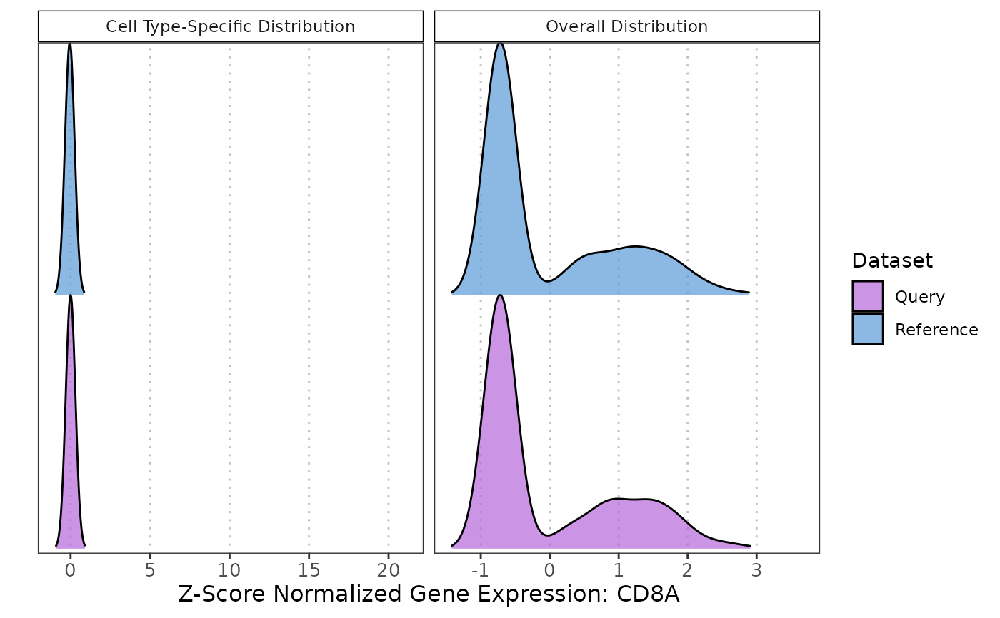

R/plotMarkerExpression.R
plotMarkerExpression.RdThis function generates density plots to visualize the distribution of gene expression values for a specific gene across the overall dataset and within a specified cell type.
plotMarkerExpression(
reference_data,
query_data,
ref_cell_type_col,
query_cell_type_col,
gene_name,
label
)A SingleCellExperiment object containing numeric expression matrix for the reference cells.
A SingleCellExperiment object containing numeric expression matrix for the query cells.
character. The column name in the colData of reference_data that identifies the cell types.
character. The column name in the colData of query_data that identifies the cell types.
character. A string representing the gene name for which the distribution is to be visualized.
character. A vector of cell type labels to plot (e.g., c("T-cell", "B-cell")).
A gtable object containing two arranged density plots as grobs. The first plot shows the overall gene expression distribution, and the second plot displays the cell type-specific expression distribution.
This function generates density plots to compare the distribution of a specific marker gene between reference and query datasets. The aim is to inspect the alignment of gene expression levels as a surrogate for dataset similarity. Similar distributions suggest a good alignment, while differences may indicate discrepancies or incompatibilities between the datasets. To make the gene expression scales comparable between the datasets, the gene expression values are transformed using z-rank normalization. This transformation ranks the expression values and then scales the ranks to have a mean of 0 and a standard deviation of 1, which helps in standardizing the distributions for comparison.
library(scater)
library(scran)
library(scRNAseq)
library(SingleR)
# Load data
sce <- HeOrganAtlasData(tissue = c("Marrow"), ensembl = FALSE)
# Divide the data into reference and query datasets
set.seed(100)
indices <- sample(ncol(assay(sce)), size = floor(0.7 * ncol(assay(sce))), replace = FALSE)
ref_data <- sce[, indices]
query_data <- sce[, -indices]
# Log transform datasets
ref_data <- logNormCounts(ref_data)
query_data <- logNormCounts(query_data)
# Get cell type scores using SingleR or any other method
pred <- SingleR(query_data, ref_data, labels = ref_data$reclustered.broad)
# Add labels to query object
colData(query_data)$labels <- pred$labels
# Note: Users can use SingleR or any other method to obtain the cell type annotations.
plotMarkerExpression(reference_data = ref_data,
query_data = query_data,
ref_cell_type_col = "reclustered.broad",
query_cell_type_col = "labels",
gene_name = "VPREB3",
label = "B_and_plasma")
